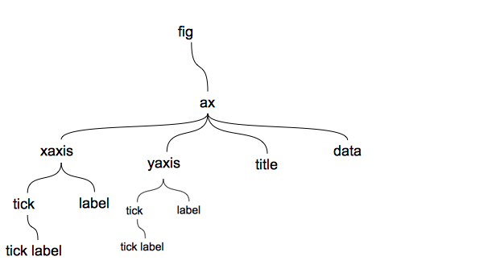

Numpy
pandas
数据可视化 <<=
本文是对数据可视化的介绍，原来只介绍了matplotlib，书中又增加了pandas与seaborn。
对一个工具性的库，并不需要一板一眼的介绍的组成，这里对它进行重新整理，给出整体印象的同时，更加注重示例；并增加panda的plot，seaborn暂不介绍。
Matplot
概述

一幅图像(figure)由多个子图像(subplot)组成，每个子图像都是一个坐标系(axes，简写ax)，每个坐标系(ax)都有2个坐标轴，坐标轴有自己的刻度（ticks）以及自己代表的量（label），刻度上也可以有自己的标志(ticks-lebel)。
除了坐标轴，最主要是数据的展示，用不同的图形来进行展示，如线性、柱状图、饼图、散点图。多个量时，需要有图例(legend)来表示。有时候在图形上，还有一些标注
整个图像一般会有一个标题（title）
基本图形
1 | import matplotlib.pyplot as plt |
add_subplot需要一个一个的添加，可以用subplots将fig与subplot都拿出来。
1 | fig, axes = plt.subplots(2, 2, sharex=True, sharey=True) # axes是ax的列表 |
较完整的线形图
1 | fig = plt.figure() |
图例的位置：
| loc string | loc code |
|---|---|
| ‘best’ | 0 |
| ‘uppder right’ | 1 |
| ‘upder left’ | 2 |
| ‘lower left’ | 3 |
| ‘lower right’ | 4 |
| ‘right’ | 5 |
| ‘center left’ | 6 |
| ‘center right’ | 7 |
| ‘lower center’ | 8 |
| ‘upper center’ | 9 |
| ‘center’ | 10 |
1 | # 形状：将形状放在handles中 |
ps：可以在图形中再增加一些描述的文本(text)，或者批注(annotate)，这些就不写了。
条状图bar
1 | import numpy as np |
表格table
1 | import numpy as np |
图像
1 | import matplotlib.pyplot as plt |
pandas
pandas 自身有内置的方法，简化DataFrame与Serices的绘制。这里只做简单的介绍。
折线图
1
2df = pd.DataFrame(np.random.randn(10, 4).cumsum(0), columns=['A', 'B', 'C', 'D'], index=np.arange(0, 100, 10))
df.plot()条形图
1
2
3
4fig, axes = plt.subplots(2, 1)
data = pd.Series(np.random.rand(16), index=list('abcdefghijklmnop'))
data.plot.bar(ax=axes[0], color='k', alpha=0.7)
data.plot.barh(ax=axes[1], color='k', alpha=0.7)DataFrame的条形图
1
2
3
4
5
6
7df = pd.DataFrame(
np.random.rand(6, 4),
index=['one', 'two', 'three', 'four','five', 'six'],
columns=pd.Index(['A', 'B', 'C', 'D'],
name='Genus')
)
df.plot.bar()